Taesoo Kim
Taesoo Kim
Why can kernel access user program memory? For what purpose?
Given limited memory space, how does an embedded device handle virtual memory?
How does an operating system give the illusion of multiple things occurring simultaneously? For example, if I run a Python script, download a file from the web, and fetch a web page in my browser all at the same time it looks to me as if my Python script is running through to completion without being scheduled out by the scheduler but it also seems like the file I’m downloading never gets interrupted and same with fetching the web page.
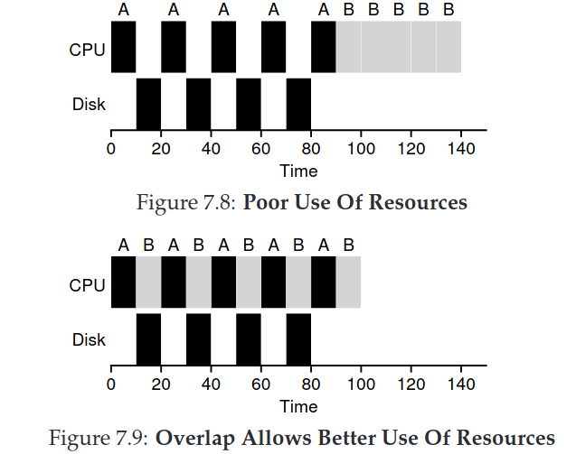
→ How to provide the illusion of owning the hardware?
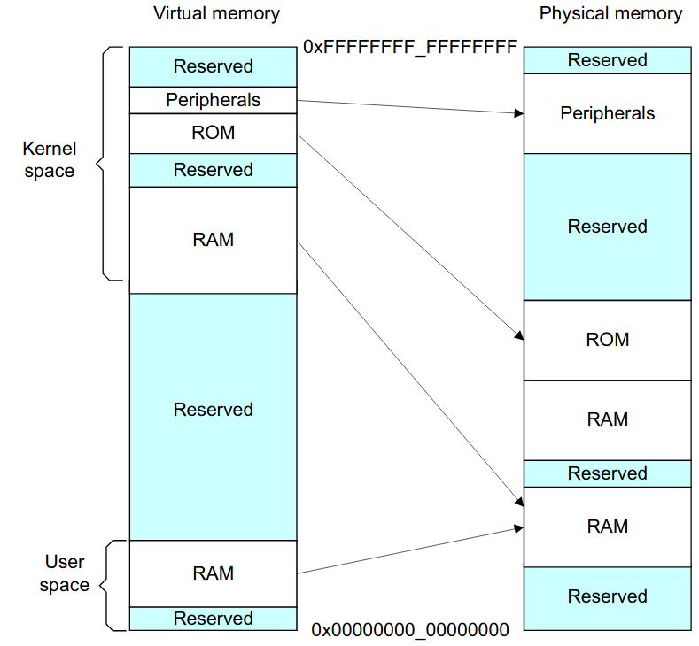
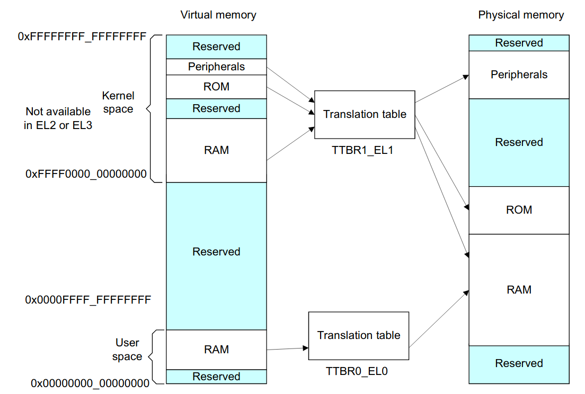
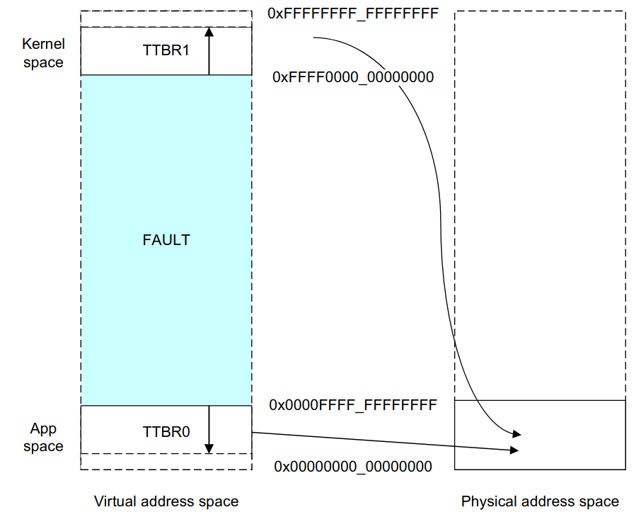
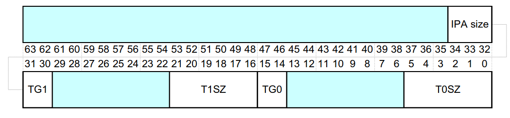
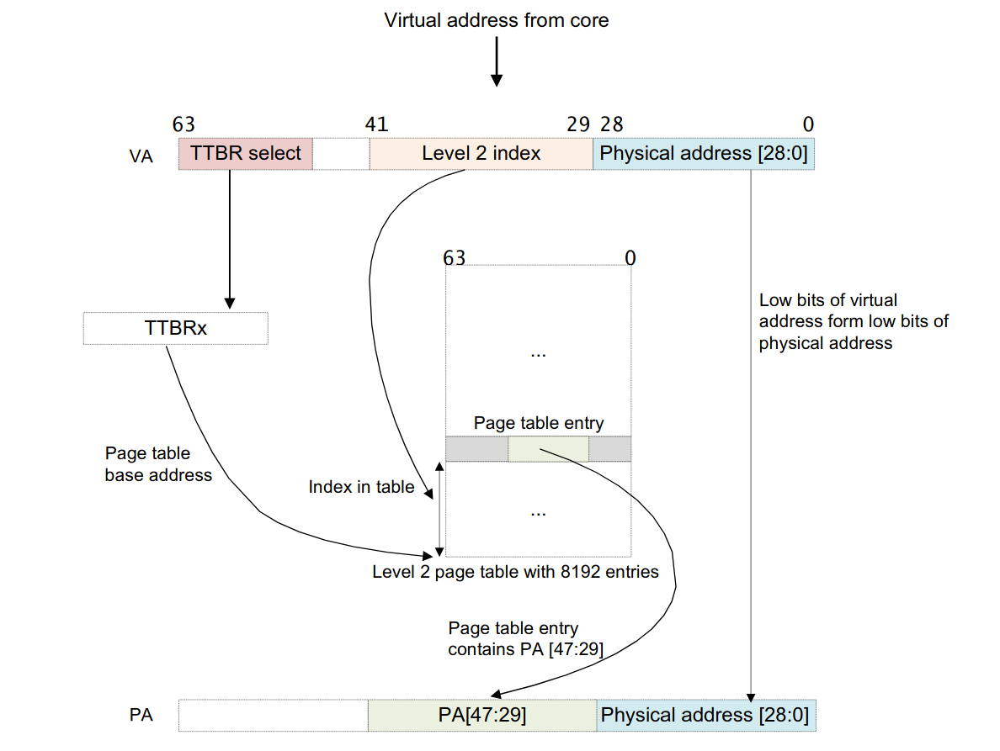
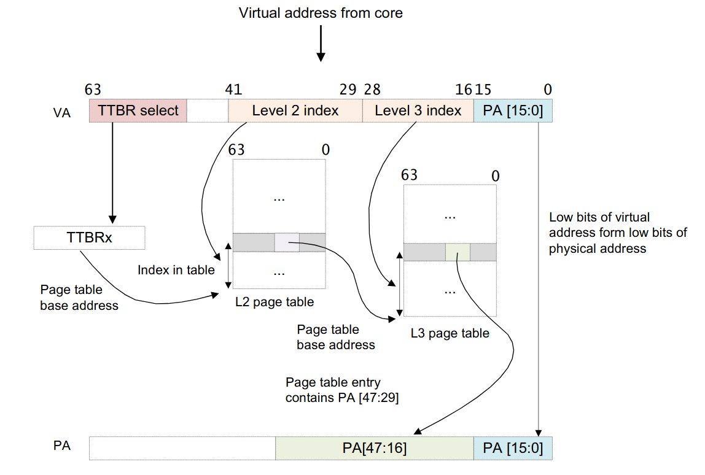
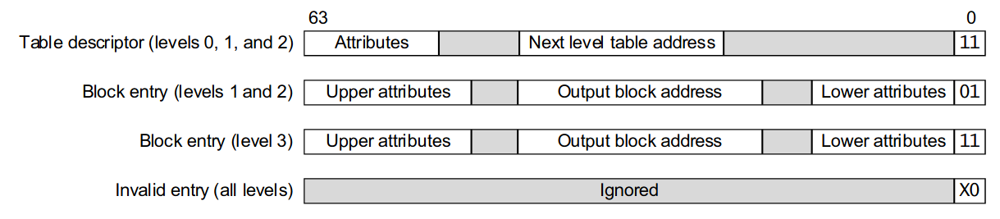
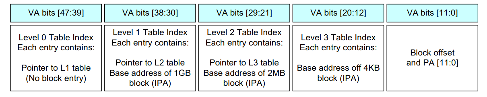
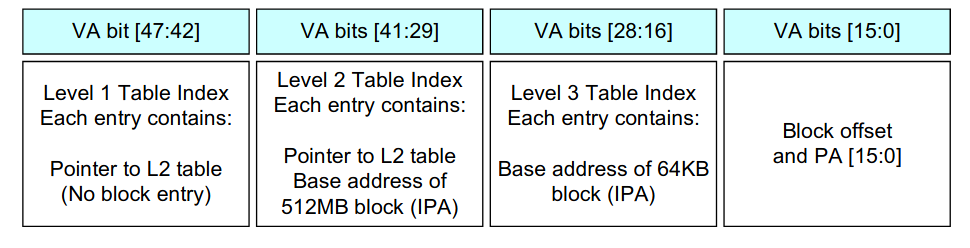
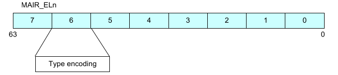
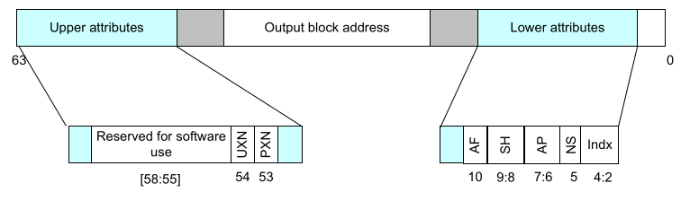
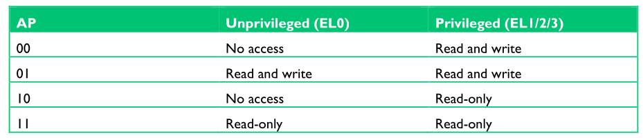
// (ref: D7.2.91: Translation Control Register)
TCR_EL1.set(
(0b00 << 37) |// TBI=0, no tagging
(ips << 32) |// IPS
(0b11 << 30) |// TG1=64k
(0b11 << 28) |// SH1=3 inner
(0b01 << 26) |// ORGN1=1 write back
(0b01 << 24) |// IRGN1=1 write back
(0b0 << 23) |// EPD1 enables higher half
((USER_MASK_BITS as u64) << 16) | // T1SZ=34 (1GB)
(0b01 << 14) |// TG0=64k
(0b11 << 12) |// SH0=3 inner
(0b01 << 10) |// ORGN0=1 write back
(0b01 << 8) |// IRGN0=1 write back
(0b0 << 7) |// EPD0 enables lower half
((KERNEL_MASK_BITS as u64) << 0), // T0SZ=32 (4GB)
);
TTBR0_EL1.set(baddr);
TTBR1_EL1.set(baddr);impl PageTable {
/// Returns a new `Box` containing `PageTable`.
/// Entries in L2PageTable should be initialized properly
/// before return.
fn new(perm: u64) -> Box<PageTable> {
// linking three l3 page tables to l2
for i in 0..=2 {
pt.l2.entries[i]
.set_value(EntryValid::Valid, RawL2Entry::VALID)
.set_value(EntryType::Table, RawL2Entry::TYPE)
.set_value(perm, RawL2Entry::AP)
.set_value(EntrySh::ISh, RawL2Entry::SH)
.set_value(EntryAttr::Mem, RawL2Entry::ATTR)
.set_bit(RawL2Entry::AF)
.set_masked(pt.l3[i].as_ptr().as_u64(), RawL2Entry::ADDR);
}
...impl KernPageTable {
pub fn new() -> KernPageTable {
let mut pt = PageTable::new(EntryPerm::KERN_RW);
// normal memory
let mut l3entry = RawL3Entry::new(0);
l3entry
.set_value(EntryValid::Valid, RawL3Entry::VALID)
.set_value(PageType::Page, RawL3Entry::TYPE)
.set_value(EntryAttr::Mem, RawL3Entry::ATTR)
.set_value(EntryPerm::KERN_RW, RawL3Entry::AP)
.set_value(EntrySh::ISh, RawL3Entry::SH)
.set_bit(RawL3Entry::AF);impl KernPageTable {
pub fn new() -> KernPageTable {
...
// iomem
l3entry
.set_value(EntrySh::OSh, RawL3Entry::SH)
.set_value(EntryAttr::Dev, RawL3Entry::ATTR);
let mut addr = IO_BASE;
while addr < IO_BASE_END {
l3entry.set_masked(addr as u64, RawL3Entry::ADDR);
pt.set_entry(addr.into(), l3entry);
addr += PAGE_SIZE;
}
}
}→ Please check this talk (a prep question)!